This post is the first in a series of posts about the Ghostbusters props and costumes we created for Halloween 2022. When more are posted I'll come back and link them together for easy browsing.
While the Ghost Trap is a staple of Ghostbusters gear, we didn't decide to make one until fairly late in the year. We considered off-the-shelf options but the ones that looked good enough were very expensive, and it seemed like something we could pull-off without a lot of extra effort. I looked at a few printable models earlier in the year and decided that there were plenty of options to choose from. However when the time came I looked closer and noticed that most of them had dozens of parts and did a lot more than what we needed. After finishing the hundred-parts-plus-each Proton Packs, I was interested in something simpler, so I decided to design something from scratch.
Since this was just going to hang from my belt I initially had no intention of adding any "interactivity" (in fact I wasn't even planning on making the doors open), but as the sketches evolved we got a little more ambitious and I changed that.
The "real" trap has a lot of details and moving parts so I spent some time thinking about where we could make it simpler. I had a goal of getting it down to less than ten printed parts (ideally five). Looking at the original trap, It's a two-piece unit that includes a "carrier" part which separates when the trap is inserted into the Containment Unit. This was the first thing to go since we had no need to separate the parts and it eliminated the careful work of designing things that fit nicely together. It took a couple tries to get the dimensions to feel right but after a test print or two the basic chassis was there and required only two prints.
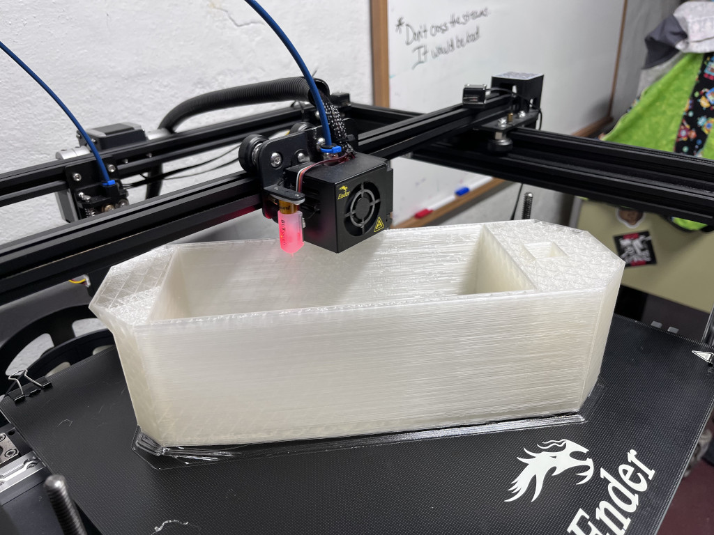
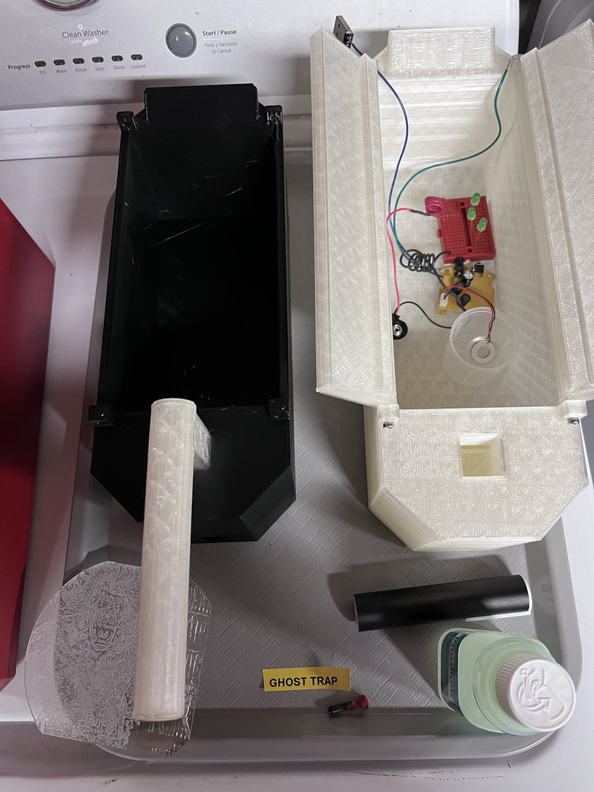
The doors were also designed at this stage took a little experimenting to get the fit right. I was a little concerned about how sturdy the studs used in the hinges would be given the printing orientation but they have held-up well so far. They are mounted with M3 bolts threaded directly into plain holes in the ends of the doors. They occasionally need to be tightened to hold the doors in anything other than full-open or full-closed positions but otherwise work very well. Two more prints...
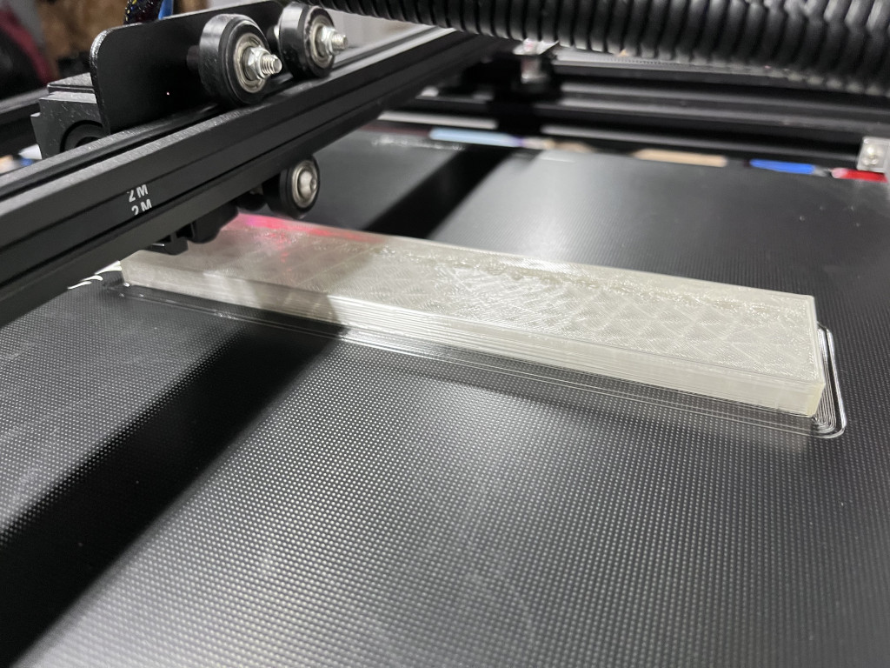
Next up was consolidating the array of individual components that cover the outside of the trap. Initially I thought these various knobs, resistors, etc. could all be incorporated into the case itself, but it would be difficult to print without support so I moved these to four panels which could be printed separately and then attached to the main box. This also helps give the trap a little more visual complexity and defines the borders of the painted areas. This makes six parts and we're finished!
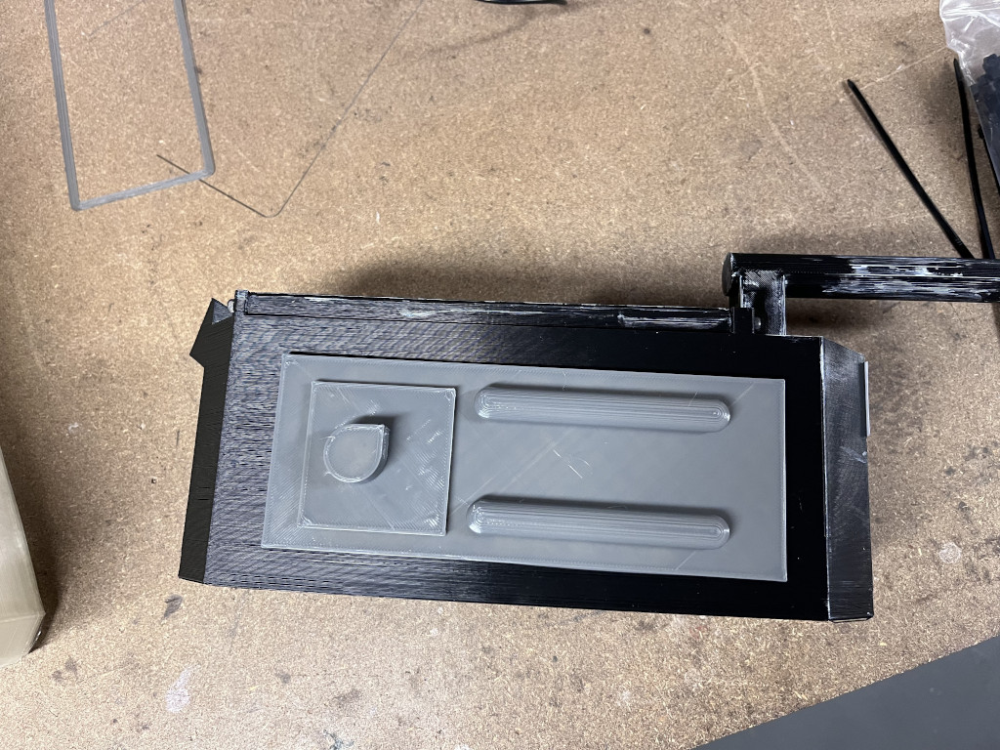
Well, sort-of...
As the trap came together we got more ambitious. The first idea was that it needed some kind of light coming from the inside, so I started designing a way to add this to the design without modifying the existing parts. Around the same time we came across these little ultrasonic mist modules which create "smoke" from water without using heat or oils. They were small enough to fit in the trap, and the power requirements were not much different from the illumination I was working on so we decided this needed to happen as well.
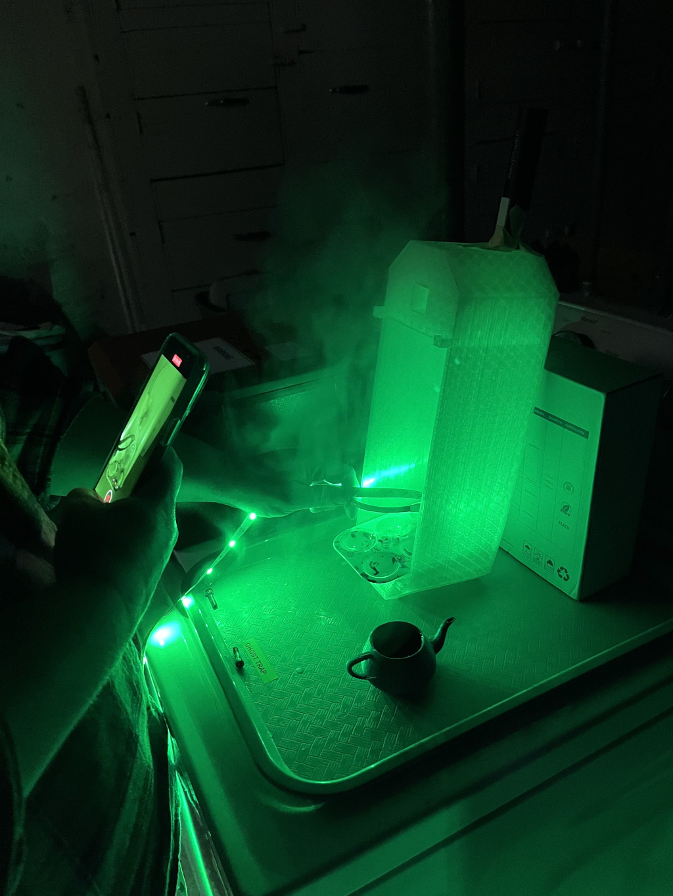
However one of the challenges with the mist device is that it requires liquid. This wouldn't normally be a big design problem but I wanted to be able to use the trap in multiple orientations (sitting on the floor and hanging from my belt) and as you know gravity has certain effects on fluids. After noodling a bit I came up with a design for a light-and-smoke module that fits snug inside the trap but can be removed and rotated to keep the water in its place regardless of trap orientation. The water capacity is limited (it was tricky balancing capacity with keeping the ultrasonic driver happy) but it can run for about 10 minutes between refills.
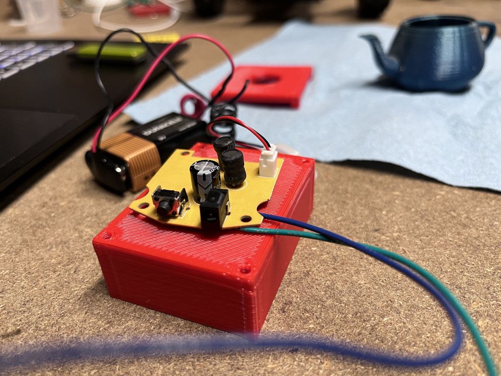
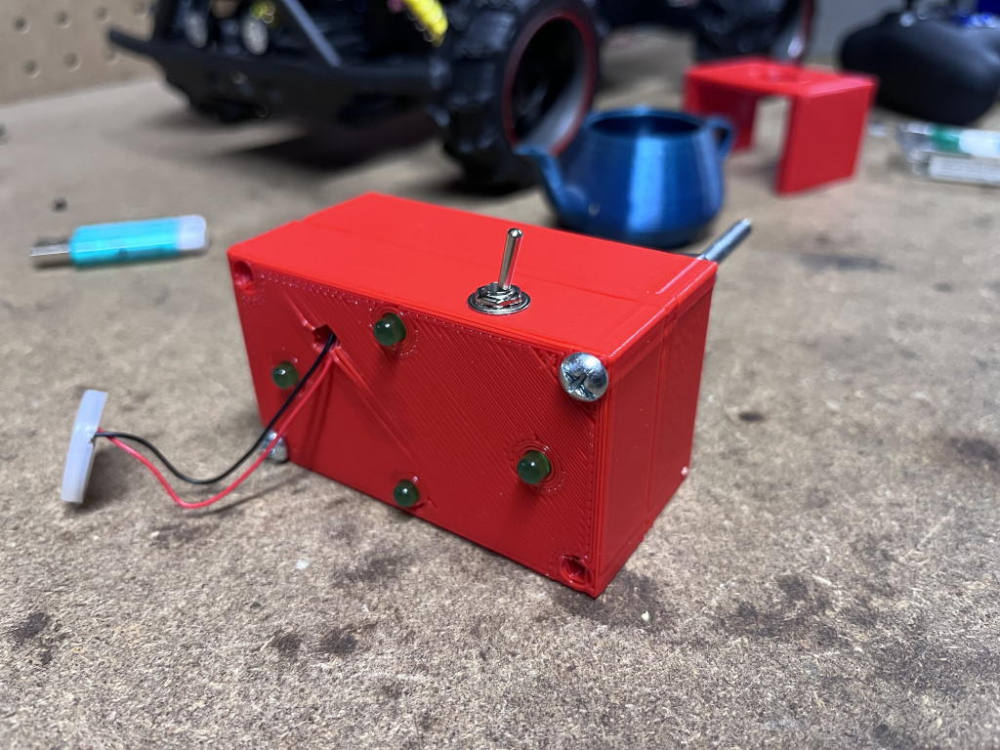
At this point the trap was complete, and with a good paint job looks better than I could have ever imagined. Not only does it look good, but it's got some fun effects and is comes in comfortable under my goal of ten parts or less. The body is a fairly large print but even so the whole thing can be printed in an an afternoon and assembled in about 30 minutes (depending on what glue you use on the handle).
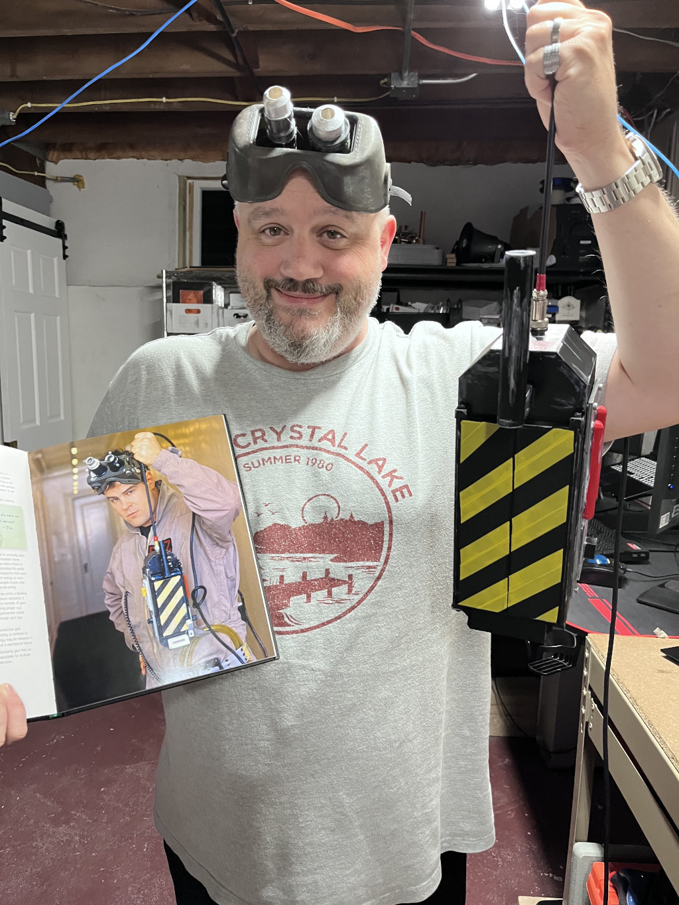
But it turns out we weren't quite done yet...
If you've seen Ghostbusters Afterlife you know that it features a "mobile" trap that can be driven by remote control. When we first started talking about building a trap we discussed recreating this version as it would be fun to drive-around during events (or even out front during Halloween). I used to have an RC chassis that would have been perfect for this, but when I went to see what it would cost to purchase something similar (along with radio, batteries, wheels, etc.) it would add $100+ to the build and we decided against it. However one afternoon we were shopping and happened across this:

While not exactly the same as the drivetrain in the movie (the wheels on the trap in the film are much larger), the price was right ($20) and after eyeballing it in the store it seemed like it might just work. After we got back home it took about 30 minutes to strip the car down and fasten the trap to the chassis. I was shocked at how easily it went together and other than being a little under-powered, it worked extremely well!
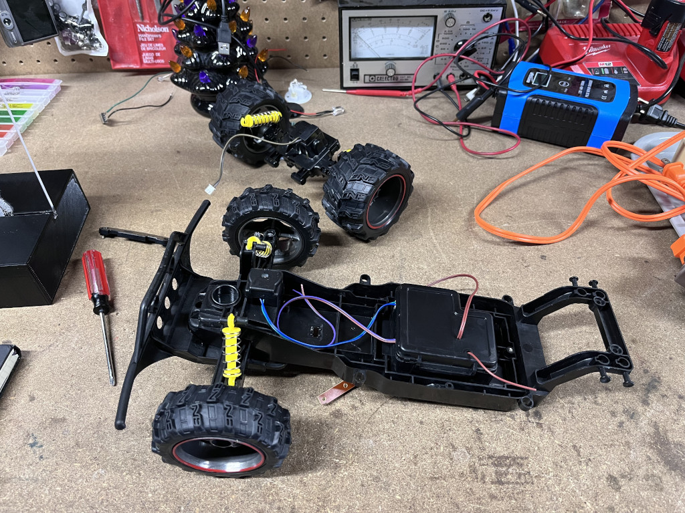
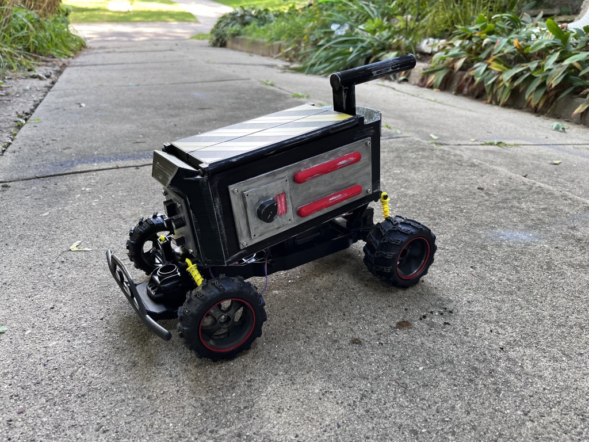
I had hoped to power the lights and smoke unit from the car's battery as well, but the power budget wouldn't allow for it and we were running out of time anyway.
With this chassis we were able to drive the trap around during the downtown Halloween festival for about an hour or so on a charge. We were even able to throw a candy bar or two in the trap and use it to deliver candy to the kids at the event. This, coupled with the lights and smoke made for a very fun prop.
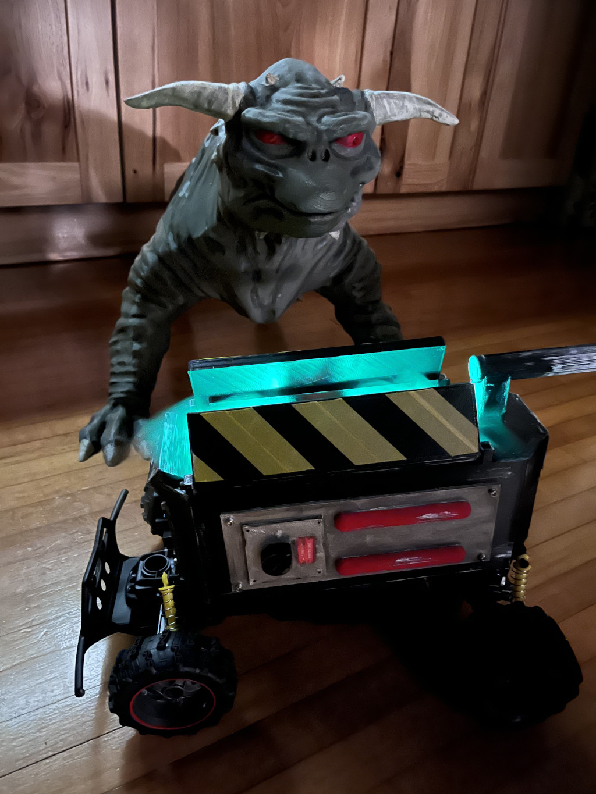
I couldn't be more happy with this build. It came together very quickly and exceeds all expectations. It is not a screen-accurate replica by any means, but it still looks great and is convincing for almost anyone other than hard-core fans. It was fun to design and build and I'm hoping that others find it to be useful.
On a more tragic note, when I went to write this I was gathering the model files and found out that the OpenSCAD source has been lost due to a very convoluted data loss event. Fortunately I posted the STL files to Printables before this occurred, but it's very disappointing to have lost the source as I had a number of improvements in mind. If I ever find a way to recover these files I'll post them as well, but for now all that remains are the STLs.